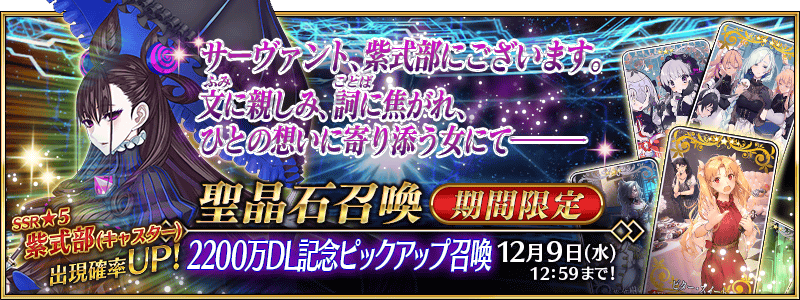
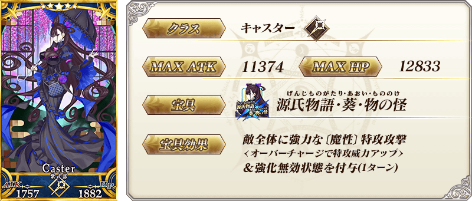
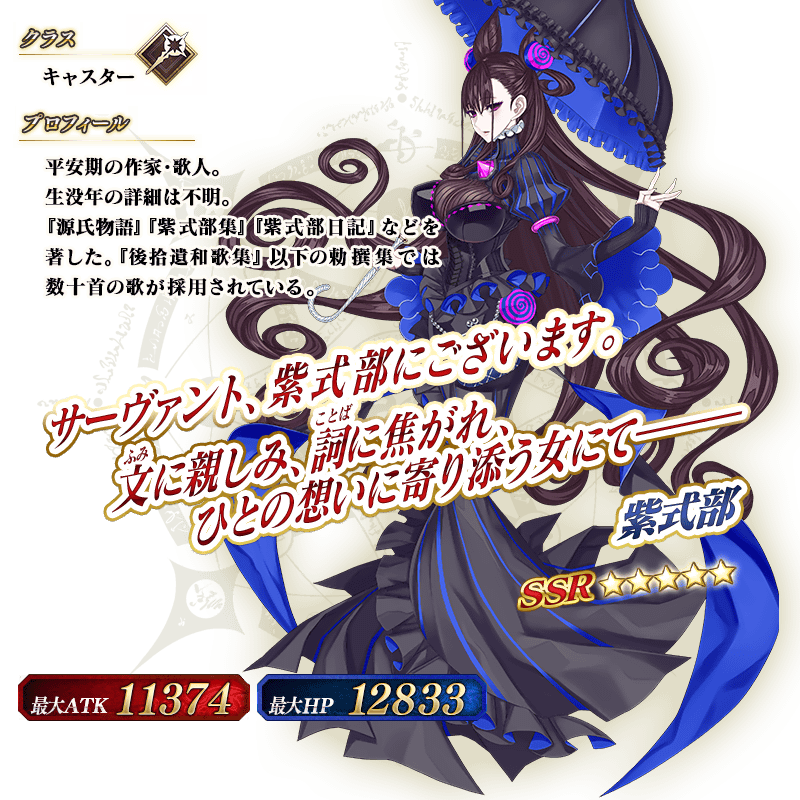
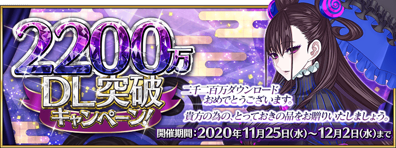

◆「2200萬DL記念Pick Up召喚」期間◆
期間:2020年11月25日(三) 17:00～12月9日(三) 11:59
舉辦期間限定「2200萬DL記念Pick Up召喚」！
為了記念2200萬DL突破，下述的從者Pick Up！
▼期間限定從者
・★5(SSR)紫式部(Caster)
另外，2019年的「情人節2019Pick Up召喚(每日交替)」中登場的下述的期間限定概念禮裝Pick Up！ ・★5(SSR)ビター・スイート ・★4(SR)ワルキューレ・スタイル ・★3(R)メモリー・オブ・クオリア
Pick Up期間中，Pick Up對象從者與概念禮裝的出現機率提升！
詳情請在聖晶石召喚畫面左下的召喚詳細確認。
11次召喚中確定1張★4(SR)以上和確定1位★3(R)以上的從者！ ※確定★4(SR)以上包含從者和概念禮裝。
◆有關從者的注意◆
※下述的從者在Pick Up期間結束後不會追加到故事召喚。
・★5(SSR)紫式部(Caster)
◆有關概念禮裝的注意◆
※下述的概念禮裝，Pick Up期間中也能靠友情點數召喚獲得。
・★3(R)メモリー・オブ・クオリア
※在自動變還設定登錄★3(R)概念禮裝的情況，下述的概念禮裝會變成自動變還的對象。
・★3(R)メモリー・オブ・クオリア


|
★★★★★SSR |

|
★★★★SR |

|
★★★R |

介紹「★5(SSR)紫式部(Caster)」的寶具演出！
在「Fate/Grand Order」官方網站內的公告中，以影片公開寶具演出，敬請確認。
其他還有，「2200萬DL突破宣傳活動」同時舉辦！
關於詳情，請自下述橫幅確認。
■「2200萬DL突破宣傳活動」詳細情報 